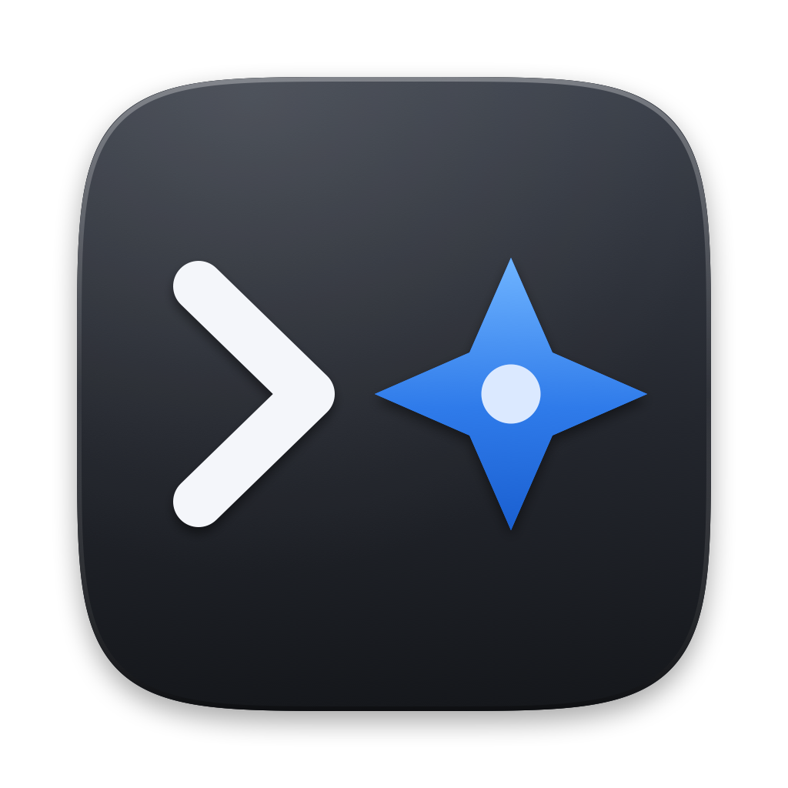
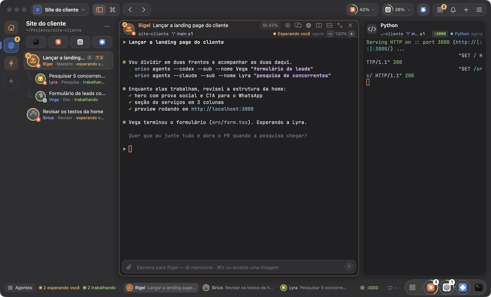

Orion Terminal
Para macOS · Apple Silicon
Terminal nativo para agentes de IA
Orquestre agentes
num terminal feito para o Mac.
Claude Code
Codex
Gemini
Multicontas
github.com/rodrillet/orion-terminal
